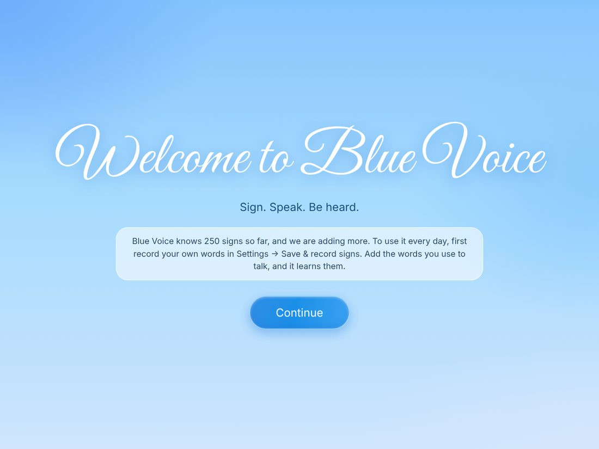
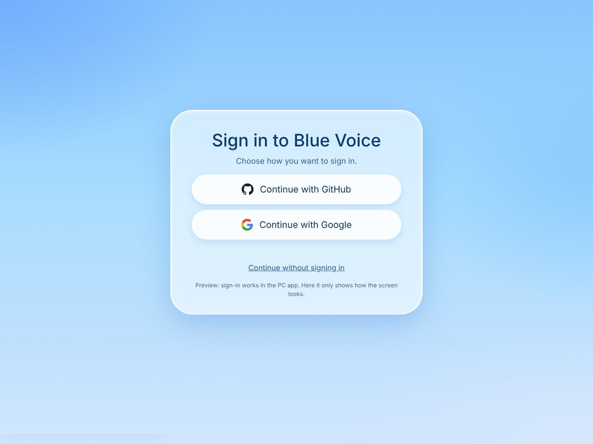
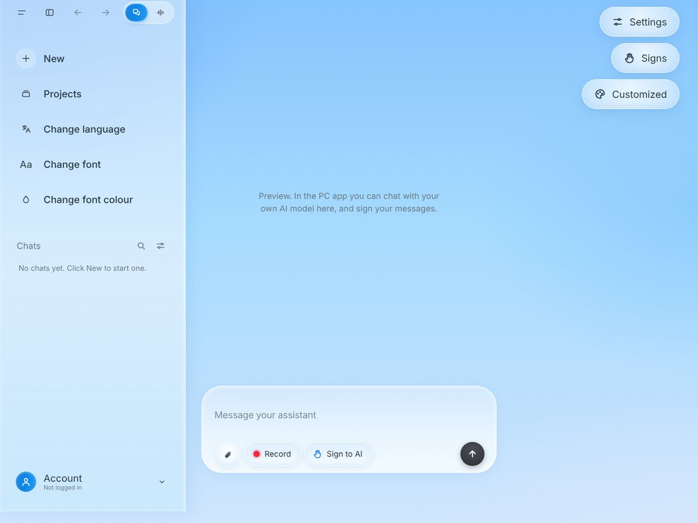
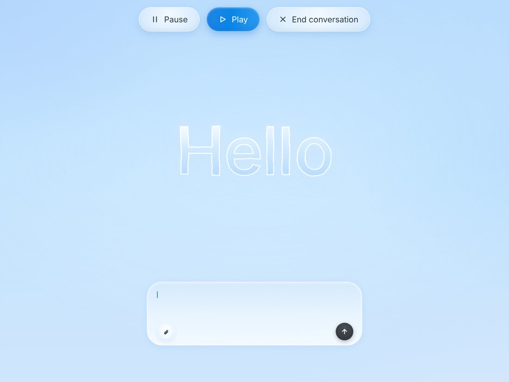
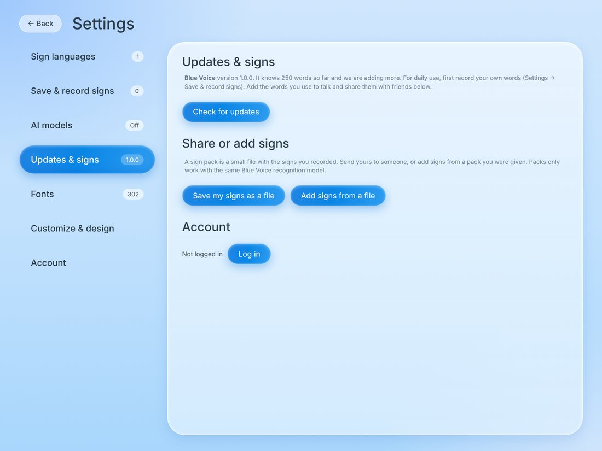

Sign. Speak. Be heard.
Blue Voice turns hand signs into text. It lets Deaf people and people who cannot speak talk to AI models by signing at a webcam. Everything is recognised on your own computer. It is free to use.
Sign at your webcam and the words appear in a message box. Show an open palm to send.
Connect ChatGPT, Gemini, or a free local model, and chat by signing. Typing works too.
Overlay mode hides everything except three buttons and a message box, and pastes your signed message into the chat app in front of you.
Record your own signs three times and it learns them. Share them as a small file with friends.
The camera is processed on your computer. Preview videos of your own signs are never saved.
The built-in assistant can search the web and, with your approval, read and edit files in a folder you choose.
The demo video is being recorded and will appear here.





Blue Voice is early software. It knows 250 words today and more are being added. To use it every day, first record your own words in Settings → Save & record signs, so it learns the words you actually use to communicate.
So far it has been tested with recorded sign clips and a simulated camera. Accuracy with many real signers has not been measured yet, and signs outside its list can be mistaken for a known word. Reading fingerspelled letters from the camera is not finished.
I want people to try Blue Voice and be honest about it, especially Deaf and hard-of-hearing people, teachers and interpreters. It is free to use. For now I send the Windows app directly to people who ask, so I can help them set it up and hear what happens. Post in Discussions to ask for a copy.
Feedback uses GitHub Discussions, so you need a free GitHub account to post.
Blue Voice is built by Haseeb Iqbal. It uses open research and tools, credited below. The aim is simple: nobody should lose their voice because they cannot speak the way a computer expects.